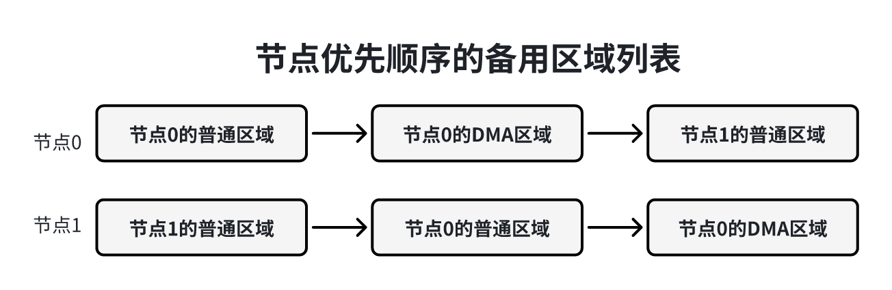
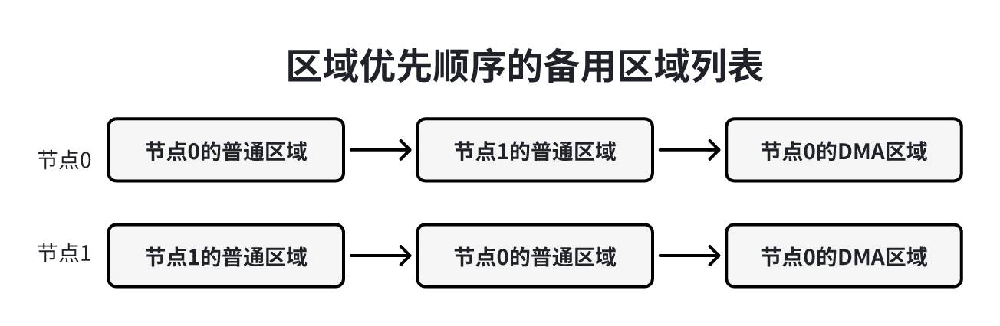
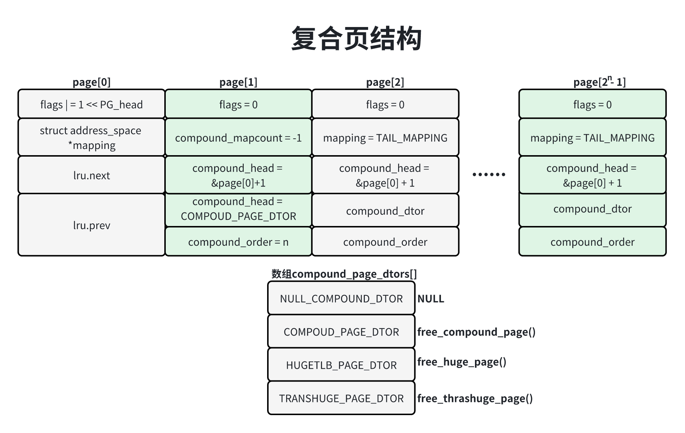
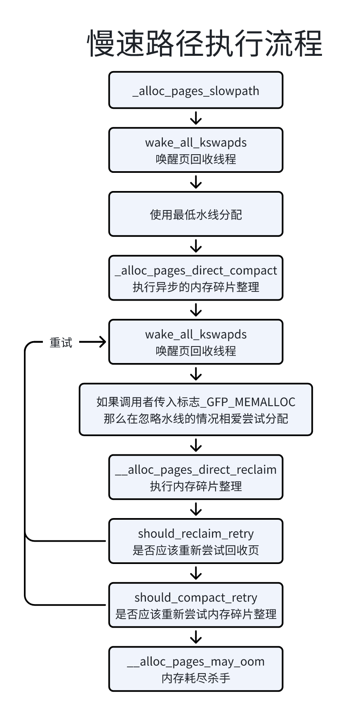

内核初始化完成后，使用页分配器管理物理页，当前使用的页分类器是伙伴分配器，伙伴分配器的热点是算法简单效率高。
连续的物理页称为页块（page block），阶（order）是伙伴分配器的一个术语，是页的数量单位，2n个连续页称为n阶页块，满足以下提交的两个n阶页块称为伙伴（buddy）。
2个页块是相邻的，即物理地址是连续的；
页块是第一个页的物理页号必须是2n的整数倍；
如果合并成n+1阶也快，第一页的物理页号必须是2n+1的整数被；
这是伙伴分配器（buddy allocator）这个名字的来源。举例子，0号页和1号页时伙伴，2号页和3号页时伙伴，1号页和2好耶不是伙伴，因为1号页和2号页合并组成一节页块，第一页的物理页号是2的整数倍。
伙伴分配器和释放物理页的数量单位是阶，分配n阶页块的过程如下：
查看是否有空闲的n阶也快，如果有直接分配；没有继续执行下一步；
查看是否存在空闲的n+1阶也快，如果有把n+1阶也快分配成2个n阶页块，一个插入空闲n阶页块链表，另一个分配出去，如果没有继续执行下一步；
查看是否存在空闲的n+2阶也快，如果有，把n+2阶页块分配未2个n+1阶页块，一个插入空闲n+1阶页块链表，另外一个分裂成2个n阶页块，一个插入空闲的n阶页块链表，另一个分配出去，如果没有，继续查看更高阶是否存在空闲页块。
释放n阶页块时，查看它的伙伴是否空闲，如果伙伴不空闲，那么把n阶页块插入空闲的n阶页块链表；如果伙伴空闲，就合并n+1阶页块，接下来释放n+1阶页块。
内核在基本的伙伴分配器的基础上做了一些扩展。
1）支持内存节点和区域，称为分区的伙伴分配器（zoned buddy allocator）；
2）为了预防内存碎片，把物理页根据可移动性分组；
3）针对分配页做了性能优化，为了减少处理器之间的竞争，在内存区域增加1个每处理器页集合；
分区的伙伴分配器专注于某个内存节点的某个区域，内存区域的结构体成员free_area用来维护空闲块，数组下标对应页块的阶数。结构体free_area的成员free_list是空闲页块的链表，nr_free是空闲页的数量。内存区域的结构体成员managed_pages是伙伴分配器管理的物理页的数量，不包括引导内存分配的物理页。
151// 位置：include/linux/mmzone.h2
3struct zone{4 ...5 // 不同长度的空闲区域6 struct free_area free_area[MAX_ORDER];7 ...8 unsigned long managed_pages;9 ...10} __cacheline_internodealigned_in_smp;11
12struct free_data{13 struct list_head free_list[MIGATE_TYPES];14 unsigned long nr_free;15}MAX_ORDER是最大阶数，实际上是可分配的最大阶数加1，默认值是11，意味着伙伴分配器一次最多可以分配210页，可以使用配置宏CONFIG_FORCE_MAX_ZONEORDER指定最大阶数。
81// 位置：inlcude/linux/mmzone.h2
3// 空闲内存管理-分区伙伴分配器4申请页时，最低的4个标志位用来指定首选的内存区域类型：
61// 位置: include/linux/gfp.h2
3标志这和首选的内存区域类型的对应关系如下所示：
| 标志组合 | 区域类型 |
|---|---|
| __GFP_DMA | ZONE_NORMAL |
| __GFP_HIGHMEM | OPT_ZONE_DMA |
| __GFP_DMA32 | OPT_ZONE_HIGHMEM |
| __GFP_MOVABLE | ZONE_NORMAL |
| (__GFP_MOVABLE | __GFP_DMA) | OPT_ZONE_DMA |
| (__GFP_MOVABLE | __GFP_HIGHMEM) | ZONE_MOVALBE |
| (__GFP_MOVABLE | __GFP_DMA32) | OPT_ZONE_DMA32 |
为什么要使用OPT_ZONE_DMA，不使用ZONE_DMA？
因为DMA区域是可选的，如果不存在只能访问16MB以下物理内存的外围设备，那么不需要定义DMA区域，OPT_ZONE_DMA就是ZONE_NORMAL，从普通区域申请页。高端内存区域和DMA32区域也是可选的。
181// 位置 include/linux/gfp.h2
3
14内核使用宏GFP_ZONE_TABLE定义了标志组合到区域类型的映射表，其中GFP_ZONES_SHIFT是区域类型占用的位数，GFP_ZONE_TABLE把每种标志组合映射到32位整数的某个位置，偏移是（标志组合 * 区域类型位数），从这个偏移开始的GFP_ZONES_SHIFT个二进制位存放区域类型。宏GFP_ZONE_TABLE是一个常量，编译器在编译时会进行优化，直接计算出结果，不会等到运行程序的时候才计算数值。
151// 位置 inlcude/linux/gfp.h2
3 5 | (OPT_ZONE_DMA << ___GFP_DMA * GFP_ZONES_SHIFT) \ 6 | (OPT_ZONE_HIGHMEM << ___GFP_HIGHMEM * GFP_ZONES_SHIFT) \ 7 | (OPT_ZONE_DMA32 << ___GFP_DMA32 * GFP_ZONES_SHIFT) \ 8 | (ZONE_NORMAL << ___GFP_MOVABLE * GFP_ZONES_SHIFT) \ 9 | (OPT_ZONE_DMA << (___GFP_MOVABLE 10 | ___GFP_DMA) * GFP_ZONES_SHIFT) \ 11 | (ZONE_MOVABLE << (___GFP_MOVABLE 12 | ___GFP_HIGHMEM) * GFP_ZONES_SHIFT) \ 13 | (OPT_ZONE_DMA32 << (___GFP_MOVABLE 14 | ___GFP_DMA32) * GFP_ZONES_SHIFT) \15)内核使用函数gfp_zone()根据分配标志得到首选的区域类型：先分离处区域标志位，然后算出在映射表中的便宜（区域标志位 * 区域类型位数），接着把映射表右移偏移值，最后取出最低的区域类型位数。
91// 位置 inlcude/linux/gfp.h2
3static inline enum zone_type gfp_zone(gfp_t flags){4 enum zone_type z;5 int bit = (__force int)(flags & GFP_ZONEMASK);6 z = (GFP_ZONE_TABLE >> (bit * GFP_ZONES_SHIFT)) & ((1<<GFP_ZONES_SHIFT) - 1);7 VM_BUG_ON((GFP_ZONE_BAD >> bit) & 1);8 return z;9}如果首选的内存节点和区域不能满足页分配请求，可以从备用内存区域借用物理页，借用必须遵守以下原则：
1）一个内存节点的某个区域类型可以从另一个内存节点的相同区域类型借用物理页，借用必须遵守以下原则；
2）高区域类型可以从低区域类型借用物理页，例如普通区域可以从DMA区域借用物理页；
3）低区域类型不能从高区域类型借用物理页，例如DMA区域不能从普通区域借用物理页；
内存节点的pg_data_t实例定义了备用区域列表，代码如下：
301// 位置：include/linux/mmzone.h2
3typedef struct pglist_data{4 ...5 // 备用区域列表6 struct zonelist node_zonelists[MAX_ZONELISTS];7 ...8} pg_data_t;9
10enum{11 // 包含所有内存节点的备用区域列表12 ZONELIST_FALLBACK,13 14 // 只包含当前节点的备用区域列表（__GFP_THISNODE）15 ZONELIST_NOFALLBACK,16 17 MAX_ZONELISTS18};19
20struct zonelist{22 struct zoneref _zonerefs[MAX_ZONES_PER_ZONELIST + 1];23};24
25struct zoneref{26 // 指向内存区域的数据结构 27 struct zone *zone;28 // 成员zone指向的内存区域的类型29 int zone_idx;30};UMA系统只有一个备用列表，按区域类型从高到低排序。假设UMA系统包含普通区域和DMA区域，那备用区域列表：{普通区域，DMA区域}。
NUMA系统的每个内存节点有2个备用区域列表：一个包含所有内存节点的区域，另一个只包含当前内存节点的区域。如果申请页时指定标志__GFP_THINOPDE，要求智能从指定内存节点分配物理页，就需要使用指定内存节点的第二个备用区域列表。
包含所有的内存节点的备用区域列表有2种排序方法。
1）节点优先顺序：先根据节点距离从小到大排序，然后在每个节点里面根据区域类型从高到低排序；
2）区域优先顺序：先根据区域类型从高到低排序，然后在每个区域类型里面根据节点距离从小到大排序；
节点优先顺序的优点是优先选择距离近的内存，缺点是在高区域耗尽以前就使用低区域，例如DMA区域一般比较小，节点优先顺序会增大DMA区域耗尽的概率，区域优先顺序的优点是减小低区域耗尽的概率，缺点是不能保证优先选择距离近的内存。
默认的排序方法是自动选择最优的排序方法：如果是64位系统，因为需要DMA和DMA32区域的设备相对少，所以选择节点优先顺序；如果是32位系统，选择区域优先顺序。
可以使用内核参数numa_zonlist_order来指定排序方法，”d“表示默认排序方法、”n“表示节点优先排序方法、“z”表示区域优先排序、不区分大小写，在运行中可以使用文件“/proc/sys/vm/numa_zonelist_order”修改排序方法。
假设NUMA系统包含节点0和1，节点0包含普通区域和DMA区域，节点1只包含普通区域。
如果选择节点优先顺序，2个节点的备用区域列表如下图所示：

如果节点0的处理器申请普通区域的物理页，应该一次尝试节点0的普通区域、节点1的普通区域和节点0的DMA区域。如果节点0的处理器申请DMA区域的物理页，首选区域是节点0的DMA气区域，备用区域列表没有其他DMA区域可以选择。
如果选择区域优先顺序，2个节点的备用区域列表如下图所示：

如果节点0的处理器申请普通区域的物理页，应该一次尝试节点0的普通区域、节点1的普通区域和节点0的DMA区域。如果节点0的处理器申请DMA区域的物理页，首选区域是节点0的DMA区域，备用区域列表没有其他DMA区域可以选择。
首选的内存区域在什么情况下从备用区域借用物理页？这个问题从区域水线开始说起。每个内存区域有3个水线。
1）高水线（high）：如果内存区域的空闲数大于高水线，说明该区域的内存充足；
2）低水线（low）：如果内存区域的空闲页数小于低水线，说明该区域的内存轻微不足；
3）最低水线（min）：如果内存区域的空闲页小于最低水线，说明该区域的内存严重不足；
151// 位置：include/linux/mmzone.h2
3enum zone_tatermarks{4 WMARK_MIN,5 WMARK_LOW,6 WMARK_HIGH,7 NR_WMARK8};9
10struct zone{11 ...12 // 区域水线， 使用_wmark_pages(zone)宏访问_13 unsigned long watermark[NRPVMWARK];14 ...15}__cacheline_internodealigned_in_smp;最低水线以下的内存称为紧急保留内存，在内存严重不足的紧急情况下，给承诺”给我少量紧急保留内存使用，我可以释放更多的内存“的进程使用。
设置了进程标志位PF_MEMALLOC的进程可以使用紧急保留的内存，标志位PF_MEMALLOC表示承诺”给我少量紧急保留内存使用，我可以释放更多的内存“，内存管理子系统以外的子系统不应该使用这个标志位，典型的例子是页回收内核线程kswaped，在回收页的过程中可能需要申请内存。
如果申请页时设置了标志位__GFP_MEMALLOC，即调用者承诺了”给我少量积极保留内存使用，我可以释放更多的内存“，那么可以使用紧急保留内存。
申请页时，第一次尝试使用低水线，如果首选的内存区域的空闲页数小于低水线，就从备用的内存区域借用物理页，如果第一次分配失败，那么唤醒所有的目标内存节点的页回收内核线程kswapd以异步回收页，然后尝试使用最低水线，如果首选的内存区域的空闲页小于最低水线，就从备用的内存区域借用物理页。
计算水线时，有2个重要的参数：
1）min_free_kbytes是最小空闲字节数，默认值是 4 *
2）watermark_scale_factor是水线缩放因子，默认值是10，可以通过文件”/proc/sys/vm/watermark_scale_factor“修改缩放因子，取值烦我是[1,1000]。
文件”/mm/page_alloc.c“中的函数__setup_per_zone_wmarkes()负责计算每个内存区域的最低水线，滴水线和高水线。
计算最低水线的方法如下：
1）min_free_pages = min_free_kbyes对应的页数；
2）lowmen_pages = 所有低端内存区域中伙伴分配器管理的页数总和；
3）高端内存区域的最低水线 = zone->managed_pages/1024，并且限制在范围[32, 128]以内(zone->managed_pages是该内存区域中伙伴分配器管理的页数，在内核初始化的过程中引导内存分配器分配初期的物理页，不受伙伴分配器管理)。
4）低端内存区域的最低水线 = min_free_pages * zone -> managed_pages/lowmen_pages，即把min_free_pages按比例分配到每个低端内存区域。
计算低水线和高水线的方法如下：
1）增量 = （最低水线 / 4, zone->managed_pages * watermark_sacle_fator / 10000）取最大值。
2）低水线 = 最低水线 + 增量；
3）高水线= 最低数显 + 增量 * 2；
如果最低水线/4比较大，那么计算公式可以简化为：
1）低水线 = 最低水线 * 5/4；
2）高水线 = 最低水线 * 3/2；
和高区域类型相比，低区域类型的内存相对少，是稀缺资源，而且有特殊用途，例如DMA区域用于外围设备和内存之间的数据传输，为了防止高区域类型过度借用低区域类型的物理页，低区域类型需要采取防卫措施，保留一定数量的物理页。
一个内存节点的某个区域类型从一个内存节点的相同区域类型借用物理页，后者应该毫无保留的借用。
内存区域有一个数组用于存放保留页数。
71// 位置：include/linux/mmzone.h2
3struct zone{4 ...5 long lowmen_kbytes_reserve[MAX_NR_ZONES];6 ...7} __cacheline_internodealigned_in_smp;zone[i]->lowmen_reserve[i]表示区域类型i应该保留多少页不能借给区域类型j，仅当j大于i时才会有意义。
zone[i]->lowmen_reserve[j]的计算规则如下：
91(i < j):2 zone[i] -> lowmen_reserve[j];3 = (当前内存节点上从zone[i+1]到zone[j]伙伴分配器管理页的总和) / sysctl_lowmen_reserve_ratio[i]4
5(i = j):6 zone[i] -> lowmen_reserve[j] = 0 (相同的区域类型不应该保留)7 8(i > j):9 zone[i] -> lowmen_reserve[j] = 0 (没有意义，不会出现低区域类型从高区域类型借用物理页的情况)数组syscrtl_lowmen_reserve_ratio存放各种区域类型的保留比例，因为内核不允许使用浮点数，所以使用到数值。DMA区域和DMA32区域的默认值保留比例是256，普通区域和高端区域的默认值比例都是32。
141// 位置：mm/page_alloc.c2
3int sysctl_lowmen_reserve_rationp[MAX_NR_ZONES - 1] = {4 5 256,6 7 8 256,9 10 11 32,12 13 32,14};可以通过文件”/proc/sys/vm/lowmen_reserve_ratio“修改各种区域类型的保留比例。
在系统长时间运行后，物理内存可能出现很多碎片，可用物理页很多，但是最大的连续物理页可能只有一页。内存碎片对用户程序不是问题，因为用户程序可以通过页表把连续的虚拟页映射到不连续的物理页，但是内存碎片对内核是一个问题，因为内核使用直接映射的虚拟地址空间连续的虚拟页必须映射到虚拟地址空间，连续的虚拟页必须映射到连续的物理页。内存碎片是伙伴分配器的一个弱点。
为了预防内存碎片，内核根据可移动性把物理页分为3种类型。
1）不可移动页：位置必须是固定，不能移动，直接映射到内核虚拟地址空间的页属性这一类。
2）可移动页：使用页表映射属于这一类，可以移动到其他为止，然后修改页表映射。
3）可回收页：不能移动，但可以回收，需要数据的时候可以重新从数据源获取，后背存储设备支持的页属于这一类。
内核把具有可移动页分组。为什么这种方法可以减少碎片？试想：如果不可移动页出现在可移动内存区域的中间，会组织可移动区域合并。这种方法把不可以冬夜聚集在一起，可以防止不可以冬夜出现在可移动区域的中间。
内核定义了一下迁移类型：
231// 位置：include/linux/mmzone.h2
3enum migratetype{4 // 不可移动5 MIGRATE_UNMOVABLE, 6 // 可移动7 MIGRATE_MOVABLE,8 // 可回收9 MIGRATE_RECLAIMABLE,10 // 定义内存区域的每处理器页集合链表的数量11 MIGRATE_PCPTYPES,12 // 告诫原子分配，即阶数大于0，并且分配页时不能睡眠等待13 MIGRATE_HIGHATOMIC = MIGRATE_PCTYPES,14 15 // 连续内存分配器16 MIGRATE_CMA17 18 19 // 隔离不能从这里分配20 MIGRATE_ISOLATE21 22 MIGRATE_TYPES23};前面3种是真正的迁移类型，后面的迁移类型都有特殊用途：MIGRATE_HIGHATOMIC用于高阶原子分配、MIGRATE_CMA用于连续内存分配器、MIGRATE_ISOLATE用来隔离物理页、由连续内存分配器、内存热插拔和从内存硬件错误回复等功能使用。
对伙伴分配器的数据结构的主要调整是把空闲链表拆分成每种迁移类型一条空闲链表。
61// 位置：include/linux/mmzone.h2
3struct free_area{4 struct list_head free_list[MIGRATE_TYPES];5 unsigned long nr_free;6};只有当物理内存足够大且每种迁移类型有足够多的物理页时，根据可移动性分组才有意义，全局变量page_gorup_by_mobility_disabled表示是否禁用根据可移动性分组。vm_total_pages是所有内存区域里面高水线以上的物理页总数，pageblock_order是按可移动性分组的阶数，pageblock_nr_pages是pageblock_order对应的页数。如果所有内存区域里面高水线以上的物理页总数小于（pageblock_nr_pages * 迁移类型数据），那么禁用根据可移动性分组。
111// 位置：mm/page_alloc.c2
3void __ref build_all_zonelists(pg_data_t *pgdat, struct *zone)4{5 ...6 if(vm_total_pages < (pageblock_nr_pages * MIGRATE_TYPES))7 page_group_by_mobility_disabled = 1;8 else9 page_group_by_mobility_disabled = 0;10 ...11}pageblock_order是按可移动性分组的阶数，简称分组阶数，可以理解为一种迁移类型的一个页块的最小长度。如果内核支持巨型页，那么pageblock_order是巨型页的阶数，否则pageblock_order是伙伴分配器的最大阶数。
131// 位置：include/linux/pageblock-flags.h2// 巨型页长度是可变的5extern unsigned int pageblock_order;6// 巨型页长度是固定的8// 如果编译内核时没有开启巨型页，按伙伴分配器的最大分配阶分组11申请页时，可以使用表示__GFP_MOVABLE指定申请可移动页，使用标志_GFP_RECLAMABLE指定申请可回收页，如果没有指定这2个标志，表示申请不可移动页。函数gfpflags_to_migratetype用来分配标志转换成迁移类型：
151// 位置： include/linux/gfp.h2
3// 把分配标志转换成迁移类型4
7static inline gfpflags_to_migratetype(const gfp_t gfp_flags)8{9 ...10 if(unlikely(page_group_by_mobility_disabled))11 return MIGRATE_UNMoVABLE;12 13 // 根据可移动性分组14 return (gfp_flags & GFP_MOVABLE_MASK) >> GFP_MOVABLE_SHIFT;15}如果禁用根据可移动性分组，那么总是申请不可移动页。
申请某种迁移类型的页时，如果这种迁移类型的页用完了，可以从其他迁移类型盗用（steal）物理页。内核定义了每种迁移类型化的备用类型优先级列表：
181// 位置：mm/page_alloc.c2
3static inline bool4__rmqueue_fallback(struct zone *zone, unsigned int order, int start_migratetype)5{6 ...7 // 在备用类型的页块链表中查找最大的页块8 for (current_order = MAX_ORDER-1;9 current_order >= order && current_order <= MAX_ORDER-1;10 --current_order) {11 area = &(zone->free_area[current_order]);12 fallback_mt = find_suitable_fallback(area, current_order,13 start_migratetype, false, &can_steal);14 ...15 }16
17 ...18}释放物理页的时候，需要把物理页插入物理页所属迁移类型的空闲链表，内核怎么知道物理页的迁移类型
？内存区域的zone结构体的成员pageblock_flags指向页块标志位图，页块的大小是分组阶数pageblock_order，我们把页块称为分组页块。
111// 位置：include/linux/mmzone.h2
3struct zone{4 ...5 6 // 分组页块的标志参考文件pageblock-flags.h7 // 如果使用稀疏内存模型，这个位图在结构体mm_section中8 unsigned long *pageblock_flags;9 10 ...11} __cacheline_internodealigned_in_smp;每个分组页块在位图中占用4位，其中3位用来存放页块的迁移类型。
111// 位置： include/linux/pageblock-flags.h2
3// 影响一个页块的位索引4enum pageblock_bits{5 PB_migrate;6 // 迁移类型需要3位7 PB_migrate_end = PB_migrate + 3 -1,8 // 如果被设置，内存碎片整理跳过这个页块9 PB_migrate_skip,10 NR_PAGBLOCK_BITS11};函数set_pageblock_migratetype()用来在页块标志位图中设置页块的迁移类型，函数get_pageblock_migratetype()用来获取页块的迁移类型。
内核在初始化时，把所有页块初始化位可移动类型，其他迁移类型的页时盗用产生的。
201// 位置：mm/page_alloc.c2
3ree_area_init_core() -> free_area_init_core() -> memmap_init() -> memmap_init_zone()4void __meminit memmap_init_zone(unsigned long size, int nid, unsigned long zone,5 unsigned long start_pfn, enum memmap_context context)6{7 ...8
9 for (pfn = start_pfn; pfn < end_pfn; pfn++) {10 ...11 if (!(pfn & (pageblock_nr_pages - 1))) {12 struct page *page = pfn_to_page(pfn);13
14 __init_single_page(page, pfn, zone, nid);15 set_pageblock_migratetype(page, MIGRATE_MOVABLE);16 } else {17 __init_single_pfn(pfn, zone, nid);18 }19 }20}可以通过文件“/proc/pagetypeinfo”查看各种迁移类型的分布情况。
内核真多分配单页做了性能优化，为了减少处理器之间的锁竞争，在内存区域增加1个每处理器页集合。
251// 位置：include/linux/mmzone.h2
3struct zone{4 ...5 // 在每个处理器上有一个页集合6 struct per_pageset __percpu *pageset;7 ...8} __cacheline_internodeligned_in_smp;9
10struct per_cpu_pageset{11 struct per_cpu_pages pcp;12 ...13};14
15struct per_cpu_pages{16 // 链表里面的页的数量17 int count;18 // 如果页的数量到达高水线，需要返回给伙伴分配器19 int high;20 // 批量添加或删除页数量21 int batch;22 23 // 每种迁移类型的一个页链表24 struct list_head lists[MIGRATE_OCTYPES];25};内存区域在每个处理器上有一个页集合，页集合中每种迁移类型有一个页链表，页集合有高水线和批量值，页集合中的页数量不能超过高水线。申请单页加入页链表，或者从页链表返回给伙伴分配器，都是采用批量操作，一次操作的页数量是批量值。
默认的批量值是batch的计算方法如下：
1）batch = zone->managed_pages / 1024，其中zone->managed_pages是内存区域中伙伴分配器管理的页数量。
2）如果batch超过（512 *1024）/ PAGE_SIZE，那么把batch设置为（512 * 1024）/ PAGE_SIZE，PAGE_SIZE指的是页长度。
3）batch = batch / 4。
4）如果batch小于1，那么把batch设置为1。
5）batch = roundown_pow_of_two(batch * 1.5) - 1，其中rounddown_pow_of_two()用来把数值向下对齐到2的n次幂。
默认的高水线是批量值的6倍。
可以通过文件“/proc/sys/vm/percpu_pagelist/_fraction”修改比例值，最小值是8，默认值是0，高水线等于伙伴分配器管理的页数量 / 比例值，同时把批量值倍设置为高水线的
从某个内存区域申请某种迁移类型的单页时，从当前处理器的页集合中该迁移类型的页链表分配页，如果页链表时空，线批量申请页加入页链表，然后分配一页。
缓存热液是指刚刚访问过物理页，物理页的数据还在处理器的缓存中。如果要申请缓存热页，从页链表首部分配；如果要申请缓存冷页，从页链表尾部分配页。
释放单页时，把页加入当前处理器的页集合中，如果释放缓存热页，加入页链表首部；如果缓存冷页，加入页链表尾部，如果页集合中的页数量大于或等于高水线，那么批量返回给伙伴分配器。
页分配器提供了一下分配页的接口：
1）alloc_pages(gfp_mask , order)请求分配一个阶数为order的页块，返回一个page实例。
2）alloc_page(gfp_mask)是函数alloc_pages在阶数为0情况下的简化形式，只分配一页。
3）__get_free_pages(gfp_mask, order)对函数alloc_pages做了封装，只能从低端内存区域分配页，并且返回虚拟地址。
4）__get_free_page(gfp_mask)是函数__get_free_pages在阶数为0情况下的假话形式，只分配一页。
5）get_zeroed_page(gfp_mask)是函数__get_free_pages在为参数gfp_mask设置了标志位
__GFP_ZERO且阶数为0的情况下的简化形式，只分配一页，并且用零初始化。
分配页的函数都带一个分配标志位参数，分配标志位为以下5类（标志位名称中得到GFP是Get Free Pages缩写）
区域修饰符：指定从哪个区域类型分配页，
__GFP_DMA：从DMA区域分配页；
__GFP_HIGHMEM：从高端内存区域分配页；
__GFP_DMA32：从DMA32区域分配页；
_GFP_MOVABLE：从可移动区域分配页；
页移动性位置提示：指定页的迁移类型和从哪些内存节点分配页；
_GFP_MOVABLE：申请可移动页，也是区域修饰符；
_GFP_RECLAIMABLe：申请可回收页；
_GFP_WRITE：指定调用者打算写物理页，只要有可能，把这些页分布到本地节点的所有区域，避免所有脏页在一个内存区域；
_GFP_HARDWALL：实施cpuset内存分配策略，cpuset是控制组（cpuset）的一个子系统，提供了把处理器和内存节点的集合分配给一组进程的机制，即允许进程在哪些处理器上运行和从哪些内存节点申请页。
_GFP_THISNODE：强制从指定节点分配页；
_GFP_ACCOUNT：把分配的页记账到内核内存控制组；
水线修饰符：
_GFP_HIGH：指明调用者是高优先级的，为了使系统能向前推进，必须准许这个请求。例如创建一个I/O上下文，把脏页回收到存储设备。
_GFP_ATOMIC：指明调用者是最高优先级的，不能回收页或者睡眠，典型的例子是中断处理程序；
_GFP_MEMALLOC：允许访问所有内存，只能在调用者承诺“给我少量紧急保留内存使用，我可以释放更多的内存”的时候使用。
GFPP_NOMEMALLOC：进制访问紧急保留保存，如果这个标志位和GFP_MEMAKKIC同时被设置，优先级比后者高；
回收修饰符：
_GFP_IO：允许读写存储设备；
_GFP_FS：允许向下调用到底层文件系统，当文件系统申请页的时候，如果内促你眼中不足，直接回收页，把脏页回收到存储设备，调用文件系统的函数，肯呢个导致死锁。为了避免死锁，文件系统申请页回收的时候应该清除这个标志位。
_GFP_DIRECT_RECLAIM：调用者可以直接回收页。
_GFP_KSWAPD_RECLAIM：当空闲页数达到低水线的时候，调用者想要唤醒页回收线程kswaped，即异步回收页。
_GFP_RECLAIM：允许直接回收页和异步回收页。
_GFP_REPEAT：允许重试，重试多次以后放弃，分配可能失败。
_GFP_NOFALL：必须无限次重试，因为调用者不能处理分配失败。
_GFP_NORETRY：不要重试，当直接回收页和内存碎片整理不能使分配成功的是偶应该放弃。
行动修饰符：
_GFP_COLD：调用者不期望的页很快被使用，尽可能分配缓存冷页（数据中在处理器的缓存中）。
_GFP_NOWARN：如果分配失败，不要打印警告信息。
_GFP_COMP：把分配的页块组合成复合页（compound page）。
_GFP_ZERO：把页用零初始化。
因为这些标志位总是组合使用，所以内核定义了一些标志位组合，常用的标志组合如下：
1）GFP_ATOMIC：原子分配，分配内核使用的页，不能睡眠。调用者是最高优先级。允许异步回收页。
112）GFP_KERNEL：分配内使用的页，可能睡眠，从低端内存区域分配页，允许异步回收页和直接回收页，允许读写存储设备，允许大勇的底层文件系统。
113）GFP_NOWAIT：分配内核使用的页，不能等待，允许异步回收页，不允许直接回收页，不允许读写存储设备，不允许调用到底层文件系统。
114）GFP_NOIO：不允许读写存储设备，允许异步回收页和直接回收页，请尽量避免直接使用这个标志，应该使用函数memalloc_noio_save和memalloc_noio_restore标记一个不能读写存储设备的范围，前置设置进程标志位PF_MEMALLOC_NOIO，后者清除进程标志位PF_MEMALLOC_NOIO。
115）GFP_NOFS：不允许调用底层文件系统，允许异步回收页和直接回收页，允许读写存储设备。请尽量避免直接使用这个标志位，应该使用函数memalloc_nofs_save和memalloc_nofs_restore标记一个不能调用的文件系统的范围，前者设置进程标志位PF_MEMALLOC_NOIO，后者清除进程标志位PF_MEMALLOC_NOIO。
116）GFP_USER：分配用户空间使用的页，内核或硬件也可以直接访问，从普通区域分配，允许异步回收页和直接回收页，允许读写存储设备，允许调用到文件系统，允许实施cpuset内存分配策略。
117）GFP_HIGHUSER：分配用户空间使用的页，内核不需要直接访问，从高端内存区域分配，物理页在使用的过程中不可以移动。
118）GFP_HIGHUSER_MOVABLE：分配用户空间使用的页，内核不需要直接访问，物理页可以通过页回收或页迁移技术移动。
119）GFP_TRANSHUGE_LIGHT：分配用户空间使用的巨型页，把分配的页块组成复合页，进制使用紧急保留内存，进制打印告警信息，不允许异步回收页和直接回收页。
21| __GFP_MOWARN ) & ~__GFP_RECLAIM)10）GFP_TRANSHUGE：分配用户空间使用的巨型页，和GFP_THRANSHUG_LIGH的区别是允许直接回收页。
11如何设置了标志位__GFP_COMP并且分配了一个阶数大于0的页块，页分配器会把页块组成复合页（compound page）。复合页最常见的用处是创建巨型页。
复合页的第一页叫首页（head page），其他页都叫尾页（tail page）。一个由n阶页块组成的复合页的结构如下图所示：

首页设置标志PG_head；
第一个尾页的成员compound_mapcount表示复合页的映射计数，即多少个虚拟页映射到这个物理页，初始值是-1，这个成员和成员mapping组成一个联合体，占用相同的位置，其他尾页把成员mapping设置为一个有毒的地址；
第一个尾页的成员compound_dtor存放复合页释放的函数数组的索引，成员compound_order存放复合页的阶数n。这2个成员和成员lru.prev占用相同的位置；
所有尾页的成员compound_head存放首页的地址，并且把最低位设置为1。这个成员和成员lru.next占用相同的位置；
判断一个页时复合页的成员的方法是：页设置标志位PG_head（针对首页），或者页的成员compound_head的最低位是1（针对尾页）。
结构体page中复合页的成员如下：
321// 位置：include/linux/mm_types.h2
3struct page{4 unsigned long flags;5 union {6 struct address_space *mapping;7 // 映射计数 第一个尾页8 atomic_t compound_mapcount;9 // page_deferred_list().next() 第二个尾页10 };11 12 union {13 struct list_head lru;14 // 复合页的尾页15 struct {16 // 首页的地址，。并且设置了最低位17 unsigned long compound_head;18 // 第一个尾页19 20 // 复合页释放函数数组的索引21 unsigned int compound_dtor;22 // 复合页的阶数23 unsigned int compound_order;24 25 // 复合页的阶数26 unsigned short int compound_order;27 unsigned short int compound_order;28 29 };30 };31 ...32};高阶原子分配：阶数大于0，并且调用者设置了分配标志位__GRP_ATOMIC，要求不能睡眠。
页分配器对高阶原子分配做了优化处理，增加了高阶原子雷丁（MIGRATE_HIGHATOMIC），在内存区域的结构体增加1个成员”nr_reserved_highaotomic“，用来记录高阶原子类型的总页数，并且限制其类型：
zone->nr_reserved_highatomic<(zone->managed_pages/100) + pageblock_nr_pages，即必须小于（伙伴分配管理的总页数 / 100 + 分组阶数的对应的页数）
71// 位置 include/linux/mmzone.h2
3struct zone{4 ...5 unsigned long nr_reserved_highaomic;6 ...7} __cacheline_internodealingned_in_smp;执行高阶原子分配时，先从高阶原子类型分配页，如果分配失败，从调用者指定的迁移类型分配页，分配成功之后，如果内存区域高阶原子类型的总页数小于限制，并且页块的迁移类型不是高阶原子类型、隔离类型和CMA迁移类型，那么把页块的迁移类型转换为高阶原子类型，并且把页块中没有分配出去的页移到高阶原子类型的空闲链表中。
当内存严重不足时，直接回收页以后仍然失败，针对高阶原子类型的页数超过pageblock_nr_pages的目标区域，把高阶原子类型的页块转换成申请的迁移类型，然后重试分配，代码如下：
271// 位置 mm/page_alloc.c2
3static inline struct page *4__alloc_pages_direct_reclaim(gfp_t gfp_mask, unsigned int order,5 unsigned int alloc_flags, const struct alloc_context *ac,6 unsigned long *did_some_progress)7{8 struct page *page = NULL;9 bool drained = false;10
11 *did_some_progress = __perform_reclaim(gfp_mask, order, ac);12 if (unlikely(!(*did_some_progress)))13 return NULL;14
15retry:16 page = get_page_from_freelist(gfp_mask, order, alloc_flags, ac);17
18 if (!page && !drained) {19 // 把高阶原子类型的页块转换成申请的迁移类型20 unreserve_highatomic_pageblock(ac, false);21 drain_all_pages(NULL);22 drained = true;23 goto retry;24 }25
26 return page;27}如果直接回收页诶呦进展超过了16次，那么针对目标区域，不再为高阶原子分配保留页，把高阶原子类型的页块转换成申请的迁移类型代码如下：
201// 位置：mm/page_alloc.c2
3static inline bool4should_reclaim_retry(gfp_t gfp_mask, unsigned order,5 struct alloc_context *ac, int alloc_flags,6 bool did_some_progress, int *no_progress_loops)7{8 ...9 if (did_some_progress && order <= PAGE_ALLOC_COSTLY_ORDER)10 *no_progress_loops = 0;11 else12 (*no_progress_loops)++;13
14
15 if (*no_progress_loops > MAX_RECLAIM_RETRIES) {16 // 在调用内存耗尽杀手之前，用玩为高阶原子分配保留的页17 return unreserve_highatomic_pageblock(ac, true);18 }19 ...20}所有分配页的函数最终都会调用到函数__alloc_pages_nodemask，这个函数被称为分区的伙伴分配器的心脏。函数原型如下：
21struct page * __alloc_pages_nodemask(gfp_t gfp_mask, unsigned int order, 2 struct zonelist *zonelist, nodemask_t *nodemask);参数说明：
gfp_mask：分配标志位；
order：阶数；
zonelist：首选内存节点的备用区域列表，如果指定了标志位__GFP_THISNODE，选择pg_data_t.node_zonelists[ZONELIST_NOFLLBACK]，否则选择pg_data_t.node_zonelists[ZONELISt_FALLBACK]。
nodemask：允许从哪些内存节点分配页，如果调用者没有要求，可以传入空指针。
算法如下：
根据分配标志位得到首选区域类型和迁移类型；
执行快速路径，使用低水线尝试第一次分配；
如果快速路径分配失败，那么执行慢速路径；
页分配器定义了一下内部分配标志位：
201// 位置：mm/internal.h2
3// 0x00 使用最低水线4// 0x01 使用低水线6// 0x02 使用高水线8// 得到水线位的掩码10
12
13// 试图更努力分配14// 设置了__GFP_HIGH 调用者是最高优先级的16// 检查cpuset 是否允许进程从某个内存节点分配页18// 允许从CMA（连续内存分配器）迁移类型分配20快速路径调用函数get_page_from_freelist函数的代码如下：
861// 位置：mm/page_alloc.c2
3static struct page *4get_page_from_freelist(gfp_t gfp_mask, unsigned int order, int alloc_flags,5 const struct alloc_context *ac)6{7 struct zoneref *z = ac->preferred_zoneref;8 struct zone *zone;9 struct pglist_data *last_pgdat_dirty_limit = NULL;10
11 // 扫描备用区域列表中每个满足条件的区域：区域类型小于或等于首选区域类型，12 // 并且内存节点在节点掩码中的相应位置被设置13 for_next_zone_zonelist_nodemask(zone, z, ac->zonelist, ac->high_zoneidx,14 ac->nodemask) {15 struct page *page;16 unsigned long mark;17
18 // 如果编译了cpuset功能，调用者设置ALLOC_CPUSET要求用cpuset检查，并且cpuset19 // 不允许当前进程从这个内存节点分配页，那么不能从这个区域分配页20 if (cpusets_enabled() &&21 (alloc_flags & ALLOC_CPUSET) &&22 !__cpuset_zone_allowed(zone, gfp_mask))23 continue;24 25 if (ac->spread_dirty_pages) {26 if (last_pgdat_dirty_limit == zone->zone_pgdat)27 continue;28
29 if (!node_dirty_ok(zone->zone_pgdat)) {30 last_pgdat_dirty_limit = zone->zone_pgdat;31 continue;32 }33 }34
35 mark = zone->watermark[alloc_flags & ALLOC_WMARK_MASK];36 // 检查水线如果 区域的空闲页-申请的页数 小于 水线37 if (!zone_watermark_fast(zone, order, mark,38 ac_classzone_idx(ac), alloc_flags)) {39 int ret;40
41 BUILD_BUG_ON(ALLOC_NO_WATERMARKS < NR_WMARK);42 if (alloc_flags & ALLOC_NO_WATERMARKS)43 goto try_this_zone;44 // 如果没有开启节点回收功能，或者当前节点和首选节点之间距离大于回收距离，那么不能从这个区域分配页45 if (node_reclaim_mode == 0 ||46 !zone_allows_reclaim(ac->preferred_zoneref->zone, zone))47 continue;48
49 // 从节点回收没有映射的进程虚拟地址空间的文件页和块分配器申请的页，然后重新检查水线50 // 如果 区域的空闲页 - 申请的页数 小于水线 不能从这个区域分配页51 ret = node_reclaim(zone->zone_pgdat, gfp_mask, order);52 switch (ret) {53 case NODE_RECLAIM_NOSCAN:54 /* did not scan */55 continue;56 case NODE_RECLAIM_FULL:57 /* scanned but unreclaimable */58 continue;59 default:60 /* did we reclaim enough */61 if (zone_watermark_ok(zone, order, mark,62 ac_classzone_idx(ac), alloc_flags))63 goto try_this_zone;64
65 continue;66 }67 }68
69try_this_zone:70 // 从当前区域分配页71 page = rmqueue(ac->preferred_zoneref->zone, zone, order,72 gfp_mask, alloc_flags, ac->migratetype);73 // 如果分配成功，调用函数prep_new_page初始化页， 如果是高阶原子分配 并且区域高阶原子类型的页数74 // 没有超过限制，那么把分配的页所属的页块转化位高阶原子类型75 if (page) {76 prep_new_page(page, order, gfp_mask, alloc_flags);77
78 if (unlikely(order && (alloc_flags & ALLOC_HARDER)))79 reserve_highatomic_pageblock(page, zone, order);80
81 return page;82 }83 }84
85 return NULL;86}函数zone_watermark_fast负责检查区域的空闲页数是否大于水线，代码如下：
241// 位置：mm/page_alloc.c2
3static inline bool zone_watermark_fast(struct zone *z, unsigned int order,4 unsigned long mark, int classzone_idx, unsigned int alloc_flags)5{6 long free_pages = zone_page_state(z, NR_FREE_PAGES);7 long cma_pages = 0;8
9// z针对90阶执行快速检查10 // 如果不允许从CMA迁移类型分配，那么不要使用空闲的CMA页，必须把空闲页减去空闲的CMA页12 if (!(alloc_flags & ALLOC_CMA))13 cma_pages = zone_page_state(z, NR_FREE_CMA_PAGES);14
16 // 如果空闲页大于 （水线 + 低端内存保留页） 即（空闲页数 - 申请的一页） 大于等于（水线 + 低端内存保留页）17 // 就允许从这个区域分配页18 if (!order && (free_pages - cma_pages) > mark + z->lowmem_reserve[classzone_idx])19 return true;20 21 // 如果其他情况，那么调用函数__zone_watermark_ok进行检查22 return __zone_watermark_ok(z, order, mark, classzone_idx, alloc_flags,23 free_pages);24}函数__zone_watermark_ok更加仔细检查区域空闲页数是否大于水线，代码如下：
711// 位置：mm/page_alloc.c2
3bool __zone_watermark_ok(struct zone *z, unsigned int order, unsigned long mark,4 int classzone_idx, unsigned int alloc_flags,5 long free_pages)6{7 long min = mark;8 int o;9 const bool alloc_harder = (alloc_flags & ALLOC_HARDER);10
11 // 把空闲的页数减去申请的页数 减去112 free_pages -= (1 << order) - 1;13
14 if (alloc_flags & ALLOC_HIGH)15 // 如果调用者是高级优先级的 把水线减半16 min -= min / 2;17
18 // 如果调用者要求更努力分配，把水线减去1/4；如果调用者没有我要求更努力分配，把空闲页19 // 页减去高阶原子类型的页数20 if (likely(!alloc_harder))21 free_pages -= z->nr_reserved_highatomic;22 else23 min -= min / 4;24
25 // 如果不允许从CMA迁移类型分配，那么不能使用空闲的CMA页，把空闲页数减去空闲的CMA页数27 if (!(alloc_flags & ALLOC_CMA))28 free_pages -= zone_page_state(z, NR_FREE_CMA_PAGES);29
31 // 如果（空闲页数 - 申请页数 + 1） 小于等于（水线 + 低端内存保留页数） 32 // 即（空闲页数 - 申请页数） 小于（水线 + 低端内存保留页数） 不能从这个区域分配页33 if (free_pages <= min + z->lowmem_reserve[classzone_idx])34 return false;35
36 // 如果只申请一页，那么允许从这个区域分配页37 if (!order)38 return true;39
40 // 如果申请阶数大于0，41 for (o = order; o < MAX_ORDER; o++) {42 struct free_area *area = &z->free_area[o];43 int mt;44
45 if (!area->nr_free)46 continue;47
48 // 如果调用者要求更努力分配，只要有一个阶数大于或等于申请阶数的空闲页块，就允许从这个区域分配49 if (alloc_harder)50 return true;51
52 // 不可移动、可移动和可回收任何一种迁移类型，只要有一个阶数大于等于空闲页块，就允许从这个区域分配页53 for (mt = 0; mt < MIGRATE_PCPTYPES; mt++) {54 if (!list_empty(&area->free_list[mt]))55 return true;56 }57
58 59 // 如果调用者指定从CMA迁移类型分配，CMA迁移类型只有一个阶数大于或等于申请阶数的空闲页块，就允许从这个区域分配页61 if ((alloc_flags & ALLOC_CMA) &&62 !list_empty(&area->free_list[MIGRATE_CMA])) {63 return true;64 }65 66 }68 // 其他情况不允许从这个区域分配页69 return false;70}71
函数rmqueue负责分配页，代码如下：
551// 位置：mm/page_alloc.c2
3static inline4struct page *rmqueue(struct zone *preferred_zone,5 struct zone *zone, unsigned int order,6 gfp_t gfp_flags, unsigned int alloc_flags,7 int migratetype)8{9 unsigned long flags;10 struct page *page;11 12 // 如果申请阶数时0 从每处理器页集合分配页13 if (likely(order == 0)) {14 page = rmqueue_pcplist(preferred_zone, zone, order,15 gfp_flags, migratetype);16 goto out;17 }18
19 /*20 * We most definitely don't want callers attempting to21 * allocate greater than order-1 page units with __GFP_NOFAIL.22 */23 WARN_ON_ONCE((gfp_flags & __GFP_NOFAIL) && (order > 1));24 spin_lock_irqsave(&zone->lock, flags);25
26 do {27 page = NULL;28 // 如果调用者要求更努力分配，先尝试从高阶原子类型分配页29 if (alloc_flags & ALLOC_HARDER) {30 page = __rmqueue_smallest(zone, order, MIGRATE_HIGHATOMIC);31 if (page)32 trace_mm_page_alloc_zone_locked(page, order, migratetype);33 }34 if (!page)35 // 从指定迁移类型分配页36 page = __rmqueue(zone, order, migratetype);37 } while (page && check_new_pages(page, order));38 spin_unlock(&zone->lock);39 if (!page)40 goto failed;41 __mod_zone_freepage_state(zone, -(1 << order),42 get_pcppage_migratetype(page));43
44 __count_zid_vm_events(PGALLOC, page_zonenum(page), 1 << order);45 zone_statistics(preferred_zone, zone);46 local_irq_restore(flags);47
48out:49 VM_BUG_ON_PAGE(page && bad_range(zone, page), page);50 return page;51
52failed:53 local_irq_restore(flags);54 return NULL;55}函数rmqueue_pcplist负责从内存区域的每处理器的页集合分配页，把主要工作委托给函数__rmqueue_pcplist，函数 __rmqueue_pcplist代码如下：
311// 位置：mm/page_alloc.c2
3static struct page *__rmqueue_pcplist(struct zone *zone, int migratetype,4 bool cold, struct per_cpu_pages *pcp,5 struct list_head *list)6{7 struct page *page;8
9 do {10 // 如果每处理器页集合中指定迁移类型的链表是空的，那么批量申请页加入链表11 if (list_empty(list)) {12 pcp->count += rmqueue_bulk(zone, 0,13 pcp->batch, list,14 migratetype, cold);15 if (unlikely(list_empty(list)))16 return NULL;17 }18
19 // 分配一页如果调用者指定标志位__GFP_COLD要求分配缓存冷页 就从链表尾部分配一页20 // 否则从链表首部分配一页21 if (cold)22 page = list_last_entry(list, struct page, lru);23 else24 page = list_first_entry(list, struct page, lru);25
26 list_del(&page->lru);27 pcp->count--;28 } while (check_new_pcp(page));29
30 return page;31}函数_rmqueue的处理过程如下：
1）从指定迁移类型分配页，如果分配成功就直接结束；
2）如果指定迁移类型是可移动类型，从CMA类型盗用页；
3）从备用迁移类型盗用页；
201// 位置：mm/page_alloc.c2
3static struct page *__rmqueue(struct zone *zone, unsigned int order,4 int migratetype)5{6 struct page *page;7
8retry:9 page = __rmqueue_smallest(zone, order, migratetype);10 if (unlikely(!page)) {11 if (migratetype == MIGRATE_MOVABLE)12 page = __rmqueue_cma_fallback(zone, order);13
14 if (!page && __rmqueue_fallback(zone, order, migratetype))15 goto retry;16 }17
18 trace_mm_page_alloc_zone_locked(page, order, migratetype);19 return page;20}函数__rmqueue_smallest从申请阶数到最大分配阶数逐个尝试：如果指定迁移类型的空闲链表不是空大的，从链表取出第一个页块，如果页块阶数比申请阶数大，那么重复分裂页块，把最后一半插入低一阶的空闲链表，直到获得一个大小为申请阶数的页块。
271// 位置：mm/page_alloc.c2
3static inline4struct page *__rmqueue_smallest(struct zone *zone, unsigned int order,5 int migratetype)6{7 unsigned int current_order;8 struct free_area *area;9 struct page *page;10
11 /* Find a page of the appropriate size in the preferred list */12 for (current_order = order; current_order < MAX_ORDER; ++current_order) {13 area = &(zone->free_area[current_order]);14 page = list_first_entry_or_null(&area->free_list[migratetype],15 struct page, lru);16 if (!page)17 continue;18 list_del(&page->lru);19 rmv_page_order(page);20 area->nr_free--;21 expand(zone, page, order, current_order, area, migratetype);22 set_pcppage_migratetype(page, migratetype);23 return page;24 }25
26 return NULL;27}函数__rnqueue_fallback负责从备用迁移类型盗用页，从最大分配阶向下到申请阶数逐个尝试，依次查看备用类型的优先级列表中的每种迁移类型是否有空闲页块，如果有，就从这种迁移类型盗用页。
351// 位置：mm/page_alloc.c2
3static inline bool4__rmqueue_fallback(struct zone *zone, unsigned int order, int start_migratetype)5{6 struct free_area *area;7 unsigned int current_order;8 struct page *page;9 int fallback_mt;10 bool can_steal;11
12 /* Find the largest possible block of pages in the other list */13 for (current_order = MAX_ORDER-1;14 current_order >= order && current_order <= MAX_ORDER-1;15 --current_order) {16 area = &(zone->free_area[current_order]);17 fallback_mt = find_suitable_fallback(area, current_order,18 start_migratetype, false, &can_steal);19 if (fallback_mt == -1)20 continue;21
22 page = list_first_entry(&area->free_list[fallback_mt],23 struct page, lru);24
25 steal_suitable_fallback(zone, page, start_migratetype,26 can_steal);27
28 trace_mm_page_alloc_extfrag(page, order, current_order,29 start_migratetype, fallback_mt);30
31 return true;32 }33
34 return false;35}如果使用低水线分配失败，那么执行慢速路径，慢速路径实在函数_alloc_pages_slowpath中实现的，执行流程如下图所示：

主要执行步骤：
如果允许异步回收页，会针对每个目标区域，唤醒区域所属内存节点的页回收线程；
使用最低水线尝试分配；
针对申请阶数大于0：如果允许直接回收页，那么执行异步模式的内存碎片整理，然后尝试分配；
如果调用者承诺“给我少量紧急保留内存使用，我可以释放更多内存”，那么在忽略水线的情况下尝试分配；
直接回收页，然后尝试分配；
针对申请阶数大于0：执行同步模式的内存碎片整理，然后尝试分配；
如果多次尝试直接回收页和同步模式的内存碎片整理，仍然分配失败，那么使用杀伤力比较大的内存耗尽杀手选择一个进程杀死，然后尝试分配；
页分配器任务阶数大于3是昂贵的分配，有些地方做了特殊处理。
函数__alloc_pages_slowpath主要代码：
2101// 位置：mm/page_allioc.c2
3static inline struct page *4__alloc_pages_slowpath(gfp_t gfp_mask, unsigned int order,5 struct alloc_context *ac)6{7 bool can_direct_reclaim = gfp_mask & __GFP_DIRECT_RECLAIM;8 const bool costly_order = order > PAGE_ALLOC_COSTLY_ORDER;9 struct page *page = NULL;10 unsigned int alloc_flags;11 unsigned long did_some_progress;12 enum compact_priority compact_priority;13 enum compact_result compact_result;14 int compaction_retries;15 int no_progress_loops;16 unsigned long alloc_start = jiffies;17 unsigned int stall_timeout = 10 * HZ;18 unsigned int cpuset_mems_cookie;19 20 // 申请阶数不能超过页分配器支持的最大分配阶21 if (order >= MAX_ORDER) {22 WARN_ON_ONCE(!(gfp_mask & __GFP_NOWARN));23 return NULL;24 }25 26retry_cpuset:27 compaction_retries = 0;28 no_progress_loops = 0;29 compact_priority = DEF_COMPACT_PRIORITY;30 cpuset_mems_cookie = read_mems_allowed_begin();31
32 /*33 * 后面可能检查cpuset是否允许当前进程从哪些内存节点申请页，34 * 需要读当前进程的成员mems_allowed使用顺序锁保护35 */36 alloc_flags = gfp_to_alloc_flags(gfp_mask);37
38 // 获取首选的内存区域39 ac->preferred_zoneref = first_zones_zonelist(ac->zonelist,40 ac->high_zoneidx, ac->nodemask);41 if (!ac->preferred_zoneref->zone)42 goto nopage;43
44 // 异步回收页，唤醒页回收线程45 if (gfp_mask & __GFP_KSWAPD_RECLAIM)46 wake_all_kswapds(order, ac);47
48 // 使用最低水线分配页49 page = get_page_from_freelist(gfp_mask, order, alloc_flags, ac);50 if (page)51 goto got_pg;52
53 /*54 * 针对申请页阶数大于0，如果满足以下3个条件，就会执行异步模式的内存碎片整理55 * 1）允许直接回收页；56 * 2）申请结束大于3，或者指定迁移类型不是可移动类型；57 * 3）调用者没有承诺“给我少量紧急保留内存使用，我可以释放更多内存”；58 */59 if (can_direct_reclaim &&60 (costly_order ||61 (order > 0 && ac->migratetype != MIGRATE_MOVABLE))62 && !gfp_pfmemalloc_allowed(gfp_mask)) {63 page = __alloc_pages_direct_compact(gfp_mask, order,64 alloc_flags, ac,65 INIT_COMPACT_PRIORITY,66 &compact_result);67 if (page)68 goto got_pg;69
70 // 申请阶数大于3， 并且调用者要求不重试71 if (costly_order && (gfp_mask & __GFP_NORETRY)) {72 /*73 * 同步模式的内存碎片整理最近失败了，所以内存碎片整理延迟执行74 * 没必要继续尝试分配75 */76 if (compact_result == COMPACT_DEFERRED)77 goto nopage;78
79 /*80 * 同步模式的内存碎片整理代价太大，继续使用异步模式的内存碎片整理81 */82 compact_priority = INIT_COMPACT_PRIORITY;83 }84 }85
86retry:87 /* 确保页回收线程在我们循环的时候不会意外的睡眠 */88 if (gfp_mask & __GFP_KSWAPD_RECLAIM)89 wake_all_kswapds(order, ac);90
91 // 如果调用者承诺“给我少量紧急内存使用，我可以释放更多内存”忽略水线92 if (gfp_pfmemalloc_allowed(gfp_mask))93 alloc_flags = ALLOC_NO_WATERMARKS;94
95 /*96 * 如果调用者没有要求使用cpuset 或者要求忽略水线，就重新获取区域列表97 */98 if (!(alloc_flags & ALLOC_CPUSET) || (alloc_flags & ALLOC_NO_WATERMARKS)) {99 ac->zonelist = node_zonelist(numa_node_id(), gfp_mask);100 ac->preferred_zoneref = first_zones_zonelist(ac->zonelist,101 ac->high_zoneidx, ac->nodemask);102 }103
104 // 使用可能调整过的区域列表和分配标志尝试105 page = get_page_from_freelist(gfp_mask, order, alloc_flags, ac);106 if (page)107 goto got_pg;108
109 // 调用者不愿意等待，不允许直接回收页，那么放弃110 if (!can_direct_reclaim)111 goto nopage;112...113 114 /*115 * 直接回收页的时候给进程设置了标志位PF_MEMALLOC在世界回收页的过程中116 * 可能申请页，为了防止直接回收递归，这里发现进程设置了标志位PF_MEMALLOC117 * 立即放弃118 */119 if (current->flags & PF_MEMALLOC)120 goto nopage;121
122 // 直接回收页123 page = __alloc_pages_direct_reclaim(gfp_mask, order, alloc_flags, ac,124 &did_some_progress);125 if (page)126 goto got_pg;127
128 // 针对申请阶数大于0，执行同步模式的内存碎片整理129 page = __alloc_pages_direct_compact(gfp_mask, order, alloc_flags, ac,130 compact_priority, &compact_result);131 if (page)132 goto got_pg;133
134 // 如果调用者要求不要重试，那么就放弃135 if (gfp_mask & __GFP_NORETRY)136 goto nopage;137
138 /*139 * Do not retry costly high order allocations unless they are140 * __GFP_REPEAT141 */142 if (costly_order && !(gfp_mask & __GFP_REPEAT))143 goto nopage;144
145 // 检查重新尝试回收页是否有意义146 if (should_reclaim_retry(gfp_mask, order, ac, alloc_flags,147 did_some_progress > 0, &no_progress_loops))148 goto retry;149
150 /*151 * 申请阶数大于0：判断是否应该重试内存碎片整理152 * did_some_progress > 0 表示直接回收页有进展153 * 如果直接回收页没有进展，那么重试内存碎片整理没有意义154 * 因为内存碎片整理的当前实现依赖足够多的空闲页155 */156 if (did_some_progress > 0 &&157 should_compact_retry(ac, order, alloc_flags,158 compact_result, &compact_priority,159 &compaction_retries))160 goto retry;161
162 // 如果cpuset修改了允许当前进程从哪些内存节点申请页， 那么需要重试163 if (read_mems_allowed_retry(cpuset_mems_cookie))164 goto retry_cpuset;165
166 // 使用内存耗尽杀手选择一个进程杀死167 page = __alloc_pages_may_oom(gfp_mask, order, ac, &did_some_progress);168 if (page)169 goto got_pg;170
171 // 如果当前进程正在被内存耗尽杀手杀死，并且忽略水线或者不允许使用 172 // 紧急保留的内存，那么不要无限循环173 if (test_thread_flag(TIF_MEMDIE) &&174 (alloc_flags == ALLOC_NO_WATERMARKS ||175 (gfp_mask & __GFP_NOMEMALLOC)))176 goto nopage;177
178 /* Retry as long as the OOM killer is making progress */179 if (did_some_progress) {180 no_progress_loops = 0;181 goto retry;182 }183
184nopage:185 // 如果cpuset修改了允许当前进程从哪些内存节点申请页，那么需要重试186 if (read_mems_allowed_retry(cpuset_mems_cookie))187 goto retry_cpuset;188
189 // 确保不能失败的请求没有漏掉，总是重试190 if (gfp_mask & __GFP_NOFAIL) {191 // 同时要求不能失败和不能直接回收页 是错误的用法192 if (WARN_ON_ONCE(!can_direct_reclaim))193 goto fail;194
195 ....196 // 先试用标志位ALLOC_HARDER | ALLOC_CPUSET尝试分配197 // 如果分配失败，则使用标志位ALLOC_HEARDER尝试分配198 page = __alloc_pages_cpuset_fallback(gfp_mask, order, ALLOC_HARDER, ac);199 if (page)200 goto got_pg;201
202 cond_resched();203 goto retry;204 }205fail:206 warn_alloc(gfp_mask, ac->nodemask,207 "page allocation failure: order:%u", order);208got_pg:209 return page;210}页分配器使用函数gfp_to_alloc_flags把分配标志位转换成内部分配标志位，代码如下：
331// 位置：mm/page_alloc.c2
3static inline unsigned int4gfp_to_alloc_flags(gfp_t gfp_mask)5{6 // 使用最低水线，并且检查cpuset是否允许当前进程从某个内存节点分配页7 unsigned int alloc_flags = ALLOC_WMARK_MIN | ALLOC_CPUSET;8
9 // 假设__GFP_HIGH和ALLOC_HIGH相同，为了节省一个if分支10 BUILD_BUG_ON(__GFP_HIGH != (__force gfp_t) ALLOC_HIGH);11 alloc_flags |= (__force int) (gfp_mask & __GFP_HIGH);12
13 if (gfp_mask & __GFP_ATOMIC) {14 /*15 * 原子分配：16 * 如果没有我要求进制使用紧急保留内存，那么需要更努力的分配17 * 如果要求进制使用紧急保留内存，那么不需要更努力的分配18 */19 if (!(gfp_mask & __GFP_NOMEMALLOC))20 alloc_flags |= ALLOC_HARDER;21 // 对于原子分配，忽略cpuset22 alloc_flags &= ~ALLOC_CPUSET;23 } else if (unlikely(rt_task(current)) && !in_interrupt())24 // 如果当前进程是实时进程，并且没有被中断抢占，那么需要更努力的分配25 alloc_flags |= ALLOC_HARDER;26
27 if (gfpflags_to_migratetype(gfp_mask) == MIGRATE_MOVABLE)29 // 可移动类型可以从CMA类型盗用30 alloc_flags |= ALLOC_CMA;31 return alloc_flags;33}页分配器提供了一下释放页的接口：
1）void __free_pages(struct page *page, unsigned int prder);第一个参数是第一个物理页的page实例地址、第二个参数是阶数；
2）void free_pages(unsigned long addr, unsigned int order);第一个参数是第一个物理页的page实例地址、第二个参数是阶数；
函数__free_pages代码如下：
91// 位置：mm/page_alloc.c2
3void __free_pages(struct page *page, unsigned int order)4{5 if (put_page_testzero(page))6 free_hot_cold_page(page,false);7 else8 __free_pages_ok(page,order);9}首先把页的引用计数减1，只有页引用计数变为0，才会这正释放页：如果阶数时0，不还给伙伴分配器，而是当做缓存添加页添加到每处理器页集合中，如果阶数大于0，调用函数__free_pagea_ok释放页。
函数free_hot_cold_page把一页添加到每处理器页集合中，如果页集合中的页数大于等于高水线，那么批量返还给伙伴分配器。第二个参数cold表示缓存冷热程度，主动释放的页作为缓存热页，回收的页作为缓存冷页，因为回收的时最少使用的页。
511// 位置：mm/page_alloc.c2
3void free_hot_cold_page(struct page *page, bool cold)4{5 struct zone *zone = page_zone(page);6 struct per_cpu_pages *pcp;7 unsigned long flags;8 unsigned long pfn = page_to_pfn(page);9 int migratetype;10
11 if (!free_pcp_prepare(page))12 return;13
14 // 得到页所属页块的迁移类型15 migratetype = get_pfnblock_migratetype(page, pfn);16 set_pcppage_migratetype(page, migratetype);17 local_irq_save(flags);18 __count_vm_event(PGFREE);19
20 /*21 * 每处理器集合只存放不可移动、可回收和可移动3种类型的页22 * 如果页的类型不是3种类型处理方法如下：23 * 1）如果隔离类型的页不需要添加到每处理器页集合，直接释放；24 * 2）其他类型的页添加到可移动类型的链表中，page->index保存真实的迁移类型25 */26 if (migratetype >= MIGRATE_PCPTYPES) {27 if (unlikely(is_migrate_isolate(migratetype))) {28 free_one_page(zone, page, pfn, 0, migratetype);29 goto out;30 }31 migratetype = MIGRATE_MOVABLE;32 }33
34 // 添加到对应迁移类型的链表中，如果缓存热页，添加到首部，否则添加到尾部35 pcp = &this_cpu_ptr(zone->pageset)->pcp;36 if (!cold)37 list_add(&page->lru, &pcp->lists[migratetype]);38 else39 list_add_tail(&page->lru, &pcp->lists[migratetype]);40 pcp->count++;41 // 如果页集合中的页数量大于等于高水线，那么批量返回给伙伴分配器42 if (pcp->count >= pcp->high) {43 unsigned long batch = READ_ONCE(pcp->batch);44 free_pcppages_bulk(zone, batch, pcp);45 pcp->count -= batch;46 }47
48out:49 local_irq_restore(flags);50}51
函数__free_pages_ok负责释放阶数大于0的页块，最终调用的释放页的核心函数是__free_one_pages
算法是：如果伙伴时空闲的，并且伙伴在同一个内存区域，那么和伙伴合并，注意隔离类型的页块和其他类型的页块不能合并，算法还做了优化处理：假设最后合并成的页块阶数时order，如果order小于MAX_ORDER-2，就检查order+1阶的伙伴是否空闲，如果空闲，那么order阶的伙伴可能正在释放，很快就可以合并成order+2阶的页块，为了防止当前页块很快的被分配出去，把当前页块添加到空闲链表的尾部。
函数__free_pages_ok代码如下：
991// 位置：mm/page_alloc.c2
3__free_pages_ok() -> free_one_page() -> __free_one_page()4
5static inline void __free_one_page(struct page *page,6 unsigned long pfn,7 struct zone *zone, unsigned int order,8 int migratetype)9{10 unsigned long combined_pfn;11 unsigned long uninitialized_var(buddy_pfn);12 struct page *buddy;13 unsigned int max_order;14
15 // pageblock_order是按可移动性分组的阶数16 max_order = min_t(unsigned int, MAX_ORDER, pageblock_order + 1);17 ....18
19continue_merging:20 // 如果伙伴时空闲的，和伙伴合并，重复这个步骤一直到结束等于max_order-121 while (order < max_order - 1) {22 // 得到伙伴的其实物理页号23 buddy_pfn = __find_buddy_pfn(pfn, order);24 // 得到伙伴的第一个页的page实例25 buddy = page + (buddy_pfn - pfn);26
27 if (!pfn_valid_within(buddy_pfn))28 goto done_merging;29 // 检查伙伴时空闲的并且在相同的内存区域30 if (!page_is_buddy(page, buddy, order))31 goto done_merging;32 /*33 * 开启了调试页分配的配置宏CONFIG_DEBUG_PAGEALLOC34 * 伙伴充当警戒页35 */36 if (page_is_guard(buddy)) {37 clear_page_guard(zone, buddy, order, migratetype);38 } else {39 // 伙伴时空闲的，把伙伴从空闲链表中删除40 list_del(&buddy->lru);41 zone->free_area[order].nr_free--;42 rmv_page_order(buddy);43 }44 combined_pfn = buddy_pfn & pfn;45 page = page + (combined_pfn - pfn);46 pfn = combined_pfn;47 order++;48 }49 if (max_order < MAX_ORDER) {50 /** 51 * 运行到这里，意味着阶数大于或等于分组阶数pageblock_order52 * 阻止把隔离类型的页块和其他类型的页块合并53 */54 if (unlikely(has_isolate_pageblock(zone))) {55 int buddy_mt;56
57 buddy_pfn = __find_buddy_pfn(pfn, order);58 buddy = page + (buddy_pfn - pfn);59 buddy_mt = get_pageblock_migratetype(buddy);60
61 // 如果一个隔离类型的页块，另一个是其他类型的页块，不能合并62 if (migratetype != buddy_mt63 && (is_migrate_isolate(migratetype) ||64 is_migrate_isolate(buddy_mt)))65 goto done_merging;66 }67 // 如果2个都是隔离类型的页块，或者其他类型的页块，那么继续合并68 max_order++;69 goto continue_merging;70 }71
72done_merging:73 set_page_order(page, order);74
75 /*76 * 最后合并成的页块阶数是order 如果order小于MAX_ORDER - 277 * 则检查order+1阶的伙伴是否空闲，如果空闲，那么order阶的伙伴可能正在释放，78 * 很快就可以合并成order+2阶的页块，为了防止当前页块很快被分配出去，79 * 把当前页块添加到空闲链表的尾部80 */81 if ((order < MAX_ORDER-2) && pfn_valid_within(buddy_pfn)) {82 struct page *higher_page, *higher_buddy;83 combined_pfn = buddy_pfn & pfn;84 higher_page = page + (combined_pfn - pfn);85 buddy_pfn = __find_buddy_pfn(combined_pfn, order + 1);86 higher_buddy = higher_page + (buddy_pfn - combined_pfn);87 if (pfn_valid_within(buddy_pfn) &&88 page_is_buddy(higher_page, higher_buddy, order + 1)) {89 list_add_tail(&page->lru,90 &zone->free_area[order].free_list[migratetype]);91 goto out;92 }93 }94
95 // 添加到空闲链表的尾部96 list_add(&page->lru, &zone->free_area[order].free_list[migratetype]);97out:98 zone->free_area[order].nr_free++;99}